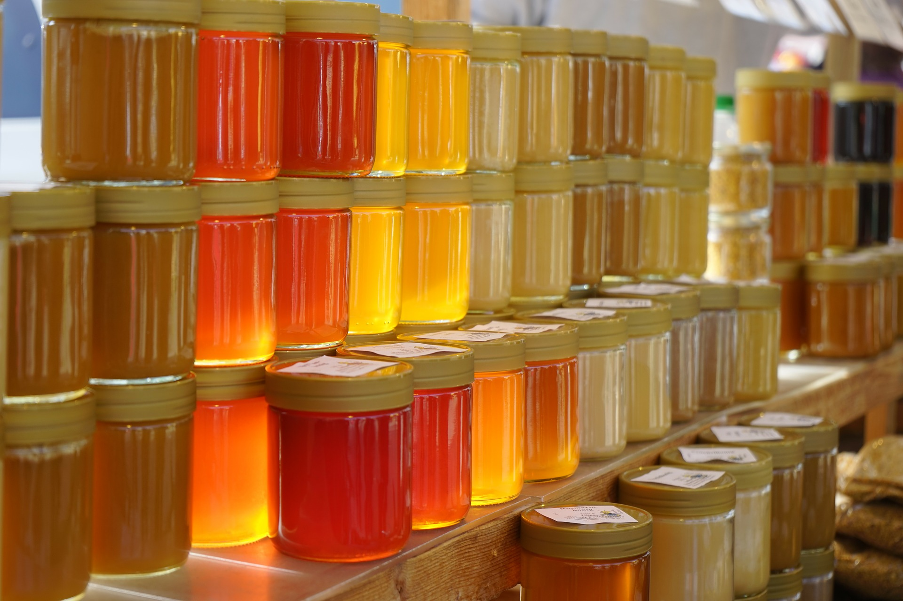

GALERIE FOTO


Buna. Ma numesc Igor. Sunt o persoana care iubeste natura. Am simtit o legatura deosebita cu ea inca de mic copil. Acum am propria mea albinarie. Consider ca avem de invatat multe lucruri de la albinute, ele ne fascineaza cu ardoarea si dragostea lor pentru munca. Va invit sa va informati despre proprietatile mierii si despre activitatea mea de apicultor mai jos.
Rame pentru faguri
Centrifugi tangentiale
Stupi
Mierea de salcim
Mierea de salcâm este considerată una dintre cele mai rafinate soiuri. Are un gust foarte special. Contine un procent important de fructoza si glucoza. Pentru mai multe informatii, faceti clic pe butonul de mai jos.
Mierea de tei
Mierea de tei este considerată una dintre cele mai valoroase soiuri de miere. Ea are o aromă inegala si excelenta, pe linga aceasta mai are și un gust minunat, puternic și intens. Această miere este foarte aromată.
Mierea poliflora
Mierea poliflora este adunata din zeci de feluri de flori de cimp care ii adauga un buchet unic de arome. Albinele o colectează din nectarul florilor de luncă - păpădie, cimbru, trifoi, salvie, etc. Culoarea mierei poliflorale variază de la galben deschis la maro.
Mierea de flori de hrisca
Mierea de flori de hrisca este considerată a fi de calitate superioară cu proprietăți terapeutice pronunțate. Aceasta miere se prelucreaza din nectarul florilor de hrisca, bogat în fier, calciu, fosfor, cupru, zinc și altele.
Mierea de castan
Mierea de castan este foarte bogata în substanțe utile: fier, iod, fructoza și zaharoza. Acest soi de miere îmbunătățește pofta de mâncare, imbunatateste starea in caz de ulcer si alte tulburări digestive.
Mierea de mai
Mierea de mai are o aroma de gradini in floare pe timp de primăvară. Ea este colectata din flori si pomi fructiferi in mai sau la inceput de iunie. Culoarea mierei de mai depinde de nectarul florilor din care a fost cules, adica de la galben pina la maro.